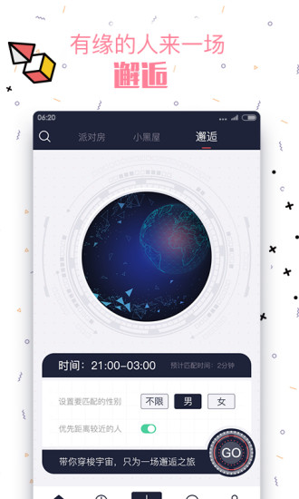

Peach陪趣用了一年半，聊聊声音社交的日子
从抱着试试看的心态装上，到断断续续用了一年半。Peach陪趣的派对房、小黑屋、邂逅速配，声音优先的路子到底走得通吗？有些习惯真的养出来了，有些坑也真的踩过了。
当初为什么装
说实话当初装它不是冲着什么声音社交的新概念，就是某个深夜刷应用商店刷到了，看介绍说"没有机器人"，后来去它的官网上看了一眼，就随手点了安装。那时候刚从几个语音交友应用退出来，被假人假消息搞烦了，想试试"真的按声音来"是个什么感觉。
从 v3.6 用到现在的 v4.2，前后一年半时间，中间卸载过两次又从peach下载拿安装包装回来。不算重度用户，但也算见过不同阶段的样子了。
越用越顺手的点：派对房的松弛感
刚上手的时候最懵的是界面。房间列表一拉下来全是派对房，每个房间名字都起得很有意思——"深夜树洞""游戏陪你打""音乐电台"，不像其他应用那样照片墙先扑面而来。我当时对着屏幕犹豫了好一会儿：点进去就能直接听？不用先打招呼？
这个"听了再说"的门槛真的很低。

后来养成了一个习惯：晚上写完代码洗完澡，躺在床上先点进一个房间挂着听。不一定说话，就当白噪音。有时候听到主持人在玩语音游戏接不上话，会忍不住开口搭一句——搭起来就多聊会儿，搭不起来也没人在意，退出来换一个就是。
现在回想起来，派对房的好处恰恰在于它的"低社交压力"。不是一对一的面试，是一群人的热闹里你可以选择站哪。想当主角上麦，想当听众潜水，没人催你做决定。这个设计我后来在其他应用里再没见到这么自然的。
越用越烦的点：邂逅速配的随机性
刚开始觉得邂逅速配很酷——双盲匹配，接通前谁都不知道对面是谁。像开盲盒一样，叮咚一声就有个声音进来了。
但用多了发现，随机的代价真的不小。
关于这些技巧，我也是后来去peach文档翻了一下才整理出来的——别查户口、从声音聊起——我都练过，但真实场景里大部分人还是会问"你多大""哪的"。我自己也试过从声音切入，比如"你的声音听着好温柔"，结果对方说"你先自报家门"——好吧。
其次是匹配效率。晚上高峰时段还好，但如果白天或者凌晨匹配，等个三五分钟没人接是常事。接通了聊两句就挂的概率也不低，对方可能匹配到了更聊得来的人，也可能就是随便点进来试试。我现在把邂逅速配当成"闲极无聊才用"的选项，不再期待它能遇到什么固定聊友。
哪个功能成了离不开的，哪个碰都没再碰
小黑屋。
第一次被邀请进小黑屋是在某个派对房里聊得比较投机，对方从资料页发起的邀请。跳过去之后是一对一的私密房间，界面突然安静下来——没有其他声音干扰，就两个人。
现在小黑屋是我用得最多的功能了。在派对房聊到觉得"这个人可以深交一下"，就会主动提一句"要不进小黑屋聊"。不是每次都成，但成功率比我想象的高。素材里说的邀请流程我已经熟到不用看：派对房里点头像进资料页 → 找邀请按钮 → 等同意。偶尔被拒绝也不尴尬，说句没事就行。
那碰都没再碰的是什么？
游戏陪玩类的房间。刚装的时候觉得有意思，点进去玩过几次语音狼人杀、谁是卧底之类的。但后来发现这些房间对新人不太友好——老玩家有固定的圈子，新人进去插不上话。而且一局游戏下来其实挺费精力的，跟我当初"躺着听热闹"的初衷背道而驰了。卸载又装回来之后就再也没去过。
长期用下来，当初的判断变了什么
高估了"没有机器人"这一句承诺的份量。
当初就是冲这句话装的。但实际用下来发现，"没有机器人"不等于"没有托"或者"都是真诚的人"。有些房间明显有固定的主播在维持气氛，有些用户的头像和自我介绍反复出现在不同房间——这些人是不是官方安排的我不确定，但"真·随机"的感觉跟想象中还是有差距。素材里也有一篇专门讲诈骗提醒的，转账返利一律拉黑，官方不会引导去其他平台充值。这些边界我现在都记牢了。
低估了"声音优先"带来的真实感。
刚开始觉得"不用刷照片"就是个卖点。但用久了发现，先听到一个人的声音再决定要不要聊，这个顺序真的不一样。有几次我在派对房听到一个很有意思的声音，聊了几句，后来在小黑屋里才看到对方发的照片——照片其实挺普通，但声音里带出来的那种"这个人还挺好聊的"感觉先入为主了。反过来也成立：有些照片很好看的用户，接通之后聊两句就觉得气场不对，直接挂也没什么心理负担。
去留结论
我不会卸载。
理由很简单：现在打开它已经不是为了"找新朋友"或者"社交突破"了，就是晚上想有个声音陪着的时候，点进去听两分钟。派对房就像一个永远不打烊的夜市，挂着热闹，偶尔开口搭一句，挺放松的。
什么信号出现就该换了？如果哪天打开发现房间列表里全是导流的、主播带货的，或者界面改成了以照片为主的信息流，那我可能就会把它换掉。但按现在的状态，还会继续用下去。

一点补充
一年半的使用经验下来，三条上麦边界记在心里：不转账、不加陌生微信QQ、不随便进来源不明的房间。这些是长期用下来踩过一些小坑之后才真正刻进脑子里的，不是看一遍规则就能记住的。希望如果你也在用，能比我少走这些弯路。——哦对了，这些整理出来的经验在几个开源仓库里都有备份，GitHub 是主站，国内用户用 Gitee 或 GitCode 会更顺一些。